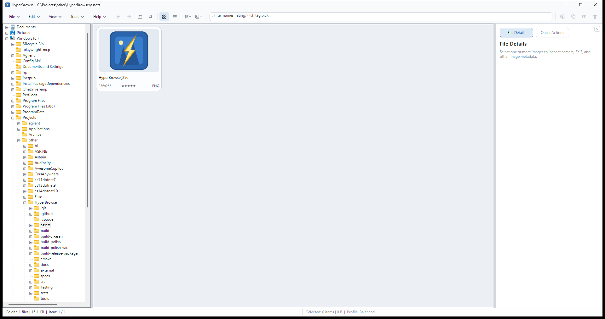

Quick start
- Choose File > Open Folder, or press Ctrl + O.
- Select a folder in the tree. HyperBrowse shows a loading state immediately, then fills the browser as images are found.
- Double-click an image, or select it and choose File > Open, to open or replace the existing viewer. Choose File > Open in New Viewer Window when the image should remain in its own viewer window.
- Use the Help > User Guide command or press F1 whenever you need this guide again.
About HyperBrowse. Help > About shows the version, build configuration, display-adapter vendor, and startup timings when diagnostics recorded them.
docs folder from the executable.
Browse and select images
Choose a view
- Thumbnail mode is the fastest way to scan a folder visually. Change the thumbnail size from the action strip or View > Thumbnail Size.
- Details mode is useful for comparing filenames, dates, dimensions, file sizes, ratings, and tags.
- The details panel shows information for the current selection. It can be toggled from View > Show Details Panel.
- Use View > Show Subfolders to include folder entries while browsing.
- With a folder open, click a segment in the breadcrumb above the browser to navigate to that parent. Long paths put hidden ancestors in the More parent folders menu.
Find and arrange
- Type ordinary words in the filter field to match filenames. Add
tag:valueortags:valuefor tags,rating:ratedorrating:unrated, or numeric constraints such asrating:4,rating:>=3, andrating:<2. Usetype:rawfor the supported RAW family or an exact extension such astype:nef,type:.nrw, ortype:jpg. Case-insensitive terms are combined with AND; unsupported or empty type tokens remain literal filename terms. Click the X at the right of a nonempty filter to clear it. - Use View > Sort to sort by filename, modified date, file size, dimensions, type, date taken, rating, tags, or random order.
- Toggle View > Sort > Descending to switch between ascending and descending order.
- Turn on View > Recursive Browsing when the current folder and its descendants should be treated as one image collection.
- Choose View > Performance HUD or press Ctrl + Shift + P to show active thumbnail decodes, average scale time, cache hit rate, memory pressure, and queue depth. The HUD is off by default.
Saved searches
The Save icon beside the filter opens the same Save Current Filter naming dialog as the File command. It is disabled for an empty filter or while saved-search storage is unavailable or busy. In narrow windows it yields space to the filter; use the File command there.
Enter a nonempty filter and choose File > Save Current Filter... to name it. Choose the name under File > Open Saved Search to apply it to the current folder or recursive scope. With a saved search active, the same submenu offers Update Saved Search..., Rename Saved Search..., and Delete Saved Search.... Updating edits its expression; deleting its entry does not clear the displayed filter. Typing in the filter clears the active saved-search identity, and folder navigation resets the filter as usual.
Up to 64 searches persist in %LOCALAPPDATA%\HyperBrowse\saved-searches.tsv. Names are unique case-insensitively, single-line, and limited to 128 UTF-16 code units; expressions are limited to 260. Blank values and duplicate names are rejected. Loading and saving run in the background; failures appear in the status bar and leave the prior list and file intact. Choose Reload Saved Searches to refresh changes from another window. No separate search index is created.
When no folder is selected, the browser shows a muted watermark above its prompt. The viewer uses the same treatment when no image is loaded; loading and error states remain separate.
Selection and drag-and-drop
Use Ctrl-click to add or remove individual items, Shift-click for a range, and Ctrl + A to select all visible items. Selected files can be dragged to a folder in the tree or to another shell-aware application such as File Explorer. Dropping files onto HyperBrowse can open an image in the viewer or copy files into the current folder, depending on where they are dropped. Holding Ctrl requests copy and holding Shift requests move where the destination supports both effects.
Right-click a selection for copy, move, delete, rename, duplicate, properties, ratings, tags, image information, and other actions. Shift-right-click opens the Windows shell context menu.
Review images in the viewer
Viewer windows are separate from the browser, and one HyperBrowse instance can keep multiple independent viewer windows open. File > Open reuses the existing viewer and replaces its collection; File > Open in New Viewer Window creates another viewer without closing the others. The same command is available from the browser context menu and uses Ctrl + Shift + Enter. All viewer windows share the instance's browser state and Quick Actions destinations, while image navigation and displayed-file commands stay scoped to the window that received input. Use the left and right arrow keys, the toolbar, or the edge navigation controls to move through the current collection.
View controls
- Use the mouse wheel or the zoom commands to zoom. Fit to Window restores a complete-image view, while 100% shows pixels at their native size.
- Pan a zoomed image by dragging it. Rotate with the viewer rotate commands.
- Double-click the viewer or use the fullscreen command for a chrome-free review.
- The info overlay shows image state without leaving the viewer. Choose a small, medium, or large overlay size.
- Choose the fullscreen Esc action in Settings > Viewer: close, fit width, fit height, or actual size. Actual Size falls back to Fit to Window when the native image dimensions exceed the monitor work area.
Compare and inspect
- Select 2 to 4 images and choose File > Compare Selected. Tiles follow the browser's visual selection order, with the primary-selected image receiving keyboard focus.
- Click a tile or use Ctrl + Tab / Ctrl + Shift + Tab to move focus. Press , or . to replace the focused tile with the previous or next unused image from the captured browser view.
- Compare starts with synchronized zoom and pan. Right-click and toggle Synchronize Compare Zoom and Pan to keep independent tile views; turning sync back on aligns every tile to the focused image. Rating and tag commands in the same menu affect only that tile. Press 0–5 or Numpad 0–5 to set the focused tile's rating; 0 clears it.
- With two tiles, C toggles comparison and X activates the compared image; Shift + Left / Right retains adjacent comparison. With three or four tiles, C exits to the focused image and X promotes the focused tile without removing the others. Page Up / Page Down exits n-up compare and navigates from the focused image.
- Open the full metadata pane when EXIF, IPTC, or XMP details need more room.
- When a RAW file has a paired JPEG, HyperBrowse can include the pair in file operations and apply the selected viewer preference.
- Deleting the displayed image advances to the next available image when possible.
Run a slideshow
Start from the current selection with View > Slideshow > From Selection, or show the current folder with From Folder. Configure the interval and transition style in Tools > Settings > Slideshow, or press Ctrl + Shift + T.
Slideshow transitions include cut, crossfade, slide, and Ken Burns styles. Slideshow scope follows the current recursive-browsing setting. The viewer can open on a secondary monitor when that preference is enabled.
Manage files
Everyday operations
- Copy and Move use Windows shell operations and can target the current folder, a recent destination, or a favorite destination.
- Delete sends files to the Recycle Bin. Use Shift + Delete for permanent deletion.
- Rename supports a selected image or inline folder renaming. F2 starts the common rename action.
- Duplicate copies selected files into the same folder with an automatic numeric suffix.
- Use Ctrl + C and Ctrl + V to copy and paste files through the Windows clipboard.
Image operations
- Batch convert a selection or the current folder to JPEG, PNG, or TIFF. Conversion creates a rendered output; it may omit source metadata, color profiles, animation/pages, or alpha when the target format cannot represent it.
- JPEG orientation adjustment changes EXIF orientation metadata. It does not claim to be a lossless pixel rotation.
- Use Ctrl + Shift + I to copy the displayed image pixels to the clipboard.
- Use Edit > Undo and Edit > Redo for recent copy, move, and rename operations. Recycle Bin deletes remain recoverable through Windows.
Use Quick Actions
Quick Actions keeps frequently used destinations close to the viewer. Open the Quick Actions panel, add destinations, and assign each one a supported printable keyboard character. Shifted characters such as * are supported; function, control, and navigation keys are not.
- Press F7 to move the displayed image to a Quick Actions destination.
- Press F8 to copy the displayed image to a Quick Actions destination.
- Press F4 in the main window to restore the saved filing position for the current folder.
- The same commands work with selected files in the browser.
- Paired RAW/JPEG files are included when paired operations are enabled.
- Assignments are remembered by folder path, even when the destination list is reordered.
- Confirmation text is also exposed through the main status surface; long paths are bounded to two lines in the temporary toast.
Formats and metadata
HyperBrowse uses Windows Imaging Component for common formats and LibRaw for supported RAW formats. JPEG, PNG, GIF, TIFF, and WebP files use the standard Windows decode path. RAW support includes ARW, CR2, CR3, DNG, NEF, NRW, RAF, and RW2. WebP and other multi-frame formats are presented through the available WIC frame; animated playback is not a current viewer feature.
JPEG EXIF orientation is applied automatically when images are displayed. Metadata surfaces expose EXIF, IPTC, and XMP information when it is present. GIF and TIFF browsing uses the first frame or page.
Display color
View > Color Management is on by default and remembered per user. It applies to browser thumbnails, each viewer, and every compare tile. Turn it off to use the previous untransformed display path; the change applies to all open windows without changing files, selection, zoom, or pan.
Embedded RGB ICC profiles describe image colors; untagged images are treated as sRGB. Each window uses the Windows profile for the monitor displaying it, including per-user associations. Moving one viewer to another monitor changes that viewer's output independently. Existing images remain visible while new output is prepared.
LibRaw processed images use sRGB; embedded JPEG previews retain available profiles. Accelerated JPEG pixels use source-profile information read through WIC. Missing or invalid display profiles, malformed or unsupported source profiles (including non-RGB profiles incompatible with the decoded RGB surface), and conversion failures fall back to the untransformed image and are logged. Transparent images retain alpha. This is SDR display conversion, not HDR tone mapping, soft proofing, or print management; a checked menu item alone does not establish physical display accuracy.
Settings and performance
Preferences are grouped in the consolidated Tools > Settings dialog and are remembered per user. Press Ctrl + Shift + T to open it. The dialog stages edits until you choose Apply or OK; Cancel or closing the dialog discards uncommitted edits.
- Slideshow contains transition style and timing for slideshow playback.
- Viewer contains manual-navigation transitions, mouse-wheel behavior, overlay text size, detail overlays, full metadata, secondary-monitor defaults, and RAW/JPEG display preferences.
- Appearance contains the light/dark theme, app text size, thumbnail size, thumbnail details, compact layout, and details panel.
- Performance contains the resource profile, cache controls, NVIDIA JPEG acceleration, and out-of-process LibRaw fallback.
- Tools > Diagnostics > Snapshot refreshes HEIC and JPEG XL WIC discovery in the background. The Derived list separates recognized extensions, decoder creation or missing/discovery-failed states, and observed thumbnail/full-image success or failure. Pending results update the open window automatically. Choose Snapshot again after installing or removing a codec; HyperBrowse does not install codecs. Reset clears decode observations while retaining discovery, and redacted exports omit decoder-supplied names/error text.
- Tools > Integration contains file associations. Single-instance behavior is on the Behavior tab.
- Behavior can enable recursive browsing, show subfolders, make Esc close the main window instead of doing nothing, and enable single-instance behavior. Main-window Ctrl + W minimizes.
- View > Thumbnail Size still provides fixed presets and keyboard stepping.
For large folders, leave the Balanced profile enabled first. Thumbnail work, metadata extraction, and folder enumeration continue in the background while the window remains interactive. Performance and Aggressive are intended for systems with spare CPU and memory; memory pressure automatically reduces viewer lookahead and trims active caches.
What changed in 2.5
Version 2.5 adds default-on SDR color management across browser thumbnails, independent viewer windows, and all compare tiles. It adds named saved searches with an inline Save action and parent-folder and browser Enter navigation.
Tools > Diagnostics > Snapshot now reports HEIC/JPEG XL extension recognition, WIC decoder creation/readiness, and observed thumbnail/full-image outcomes separately. Discovery does not install a codec or prove every file can decode; actual optional-format fixture compatibility remains unverified.
What changed in 2.4
Version 2.4 adds HEIC and JPEG XL decoding through Windows Imaging Component (WIC) when compatible codecs are installed. It also adds two-to-four-image N-up comparison with synchronized zoom and pan, long-path breadcrumb navigation, an optional Performance HUD, and expanded resource-profile, cache, and prefetch controls. Persistent-cache maintenance and benchmark coverage have been strengthened, and folder-thumbnail labels now follow the application's text-size setting.
.heif is not recognized. GIF and TIFF browsing shows the first frame or page, and animated playback remains deferred.What changed in 2.3
Version 2.3 adds WebP decoding and thumbnail support through WIC, improves WIC failure handling, and rejects stale thumbnail completions before they can update the browser. Folder-tree expansion now probes child-directory presence asynchronously, while viewer slideshow target management and display-surface recovery are more reliable during navigation and monitor changes. Menus, command bars, settings, diagnostics, file associations, and other application-owned dialogs received broader DPI-aware layout and scaling improvements, alongside stronger keyboard routing, drag/drop lifetime handling, clipboard cleanup, Unicode-path handling, and cache validation.
What changed in 2.2
Version 2.2 strengthened ratings and tags across Unicode paths, folder and case-only renames, save failures, and multiple app instances. File-operation undo verifies result identity, batch conversion publishes complete files atomically, image information/copy/orientation work runs through a cancellable background service, and slideshow timing now updates every active viewer. Settings added semantic accessibility, custom surfaces followed Windows high-contrast colors, and Quick Actions confirmations used a bounded two-line layout.
Keyboard shortcuts
Use Help > Keyboard Shortcuts for the same reference inside the application. The table below includes main-window, thumbnail-browser, and viewer behavior.
| Context | Shortcut | Action |
|---|---|---|
| Main window | ||
| File | F1 | Open this user guide |
| File | Ctrl + O | Open a folder |
| File | Ctrl + Shift + N | Create a folder in the current folder |
| File | F2 | Rename the selected item |
| File | Ctrl + Shift + R | Batch rename the selected items |
| Browser | Enter | Open the selected image in the viewer |
| File | Ctrl + Shift + Enter | Open the selected image in a new viewer window |
| File | F5 | Refresh the folder tree |
| File | Esc | Close when enabled in Settings; otherwise do nothing |
| File | Ctrl + W | Minimize the main window |
| Navigation | Mouse Back button / Backspace / Alt + Left | Navigate to the previous folder |
| Navigation | Mouse Forward button / Alt + Right | Navigate to the next folder |
| Navigation | Alt + Up | Navigate to the parent folder |
| Selection | Ctrl + A | Select all visible browser items |
| Selection | Ctrl + C / Ctrl + X | Copy / cut selected files |
| Selection | Ctrl + V | Paste files into the current folder |
| Selection | Ctrl + Shift + C | Copy selected paths |
| Selection | Ctrl + E | Reveal the selection in Explorer |
| Selection | Alt + Enter | Show file properties |
| Selection | Ctrl + I | Show image information |
| Selection | Ctrl + Shift + I | Copy displayed image pixels |
| Selection | Del / Shift + Del | Recycle / permanently delete the selection |
| Selection | Ctrl + D | Duplicate the selection |
| Selection | Ctrl + Z / Ctrl + Y | Undo / redo a supported file operation |
| Quick Actions | F7 / F8 | Move / copy to a Quick Actions destination |
| Quick Actions | F4 | Resume the saved filing position in the current folder |
| View | Ctrl + 1 / Ctrl + 2 | Thumbnail / details mode |
| View | Ctrl + 3 / Alt + Shift + P | Toggle the details panel |
| View | Ctrl + Shift + M | Toggle thumbnail metadata details |
| Navigation | Ctrl + F | Focus the browser filter and select its query |
| Navigation | F6 / Shift + F6 | Cycle forward / backward through the folder tree, browser, and visible details panel |
| View | Ctrl + Shift + P | Toggle the Performance HUD |
| View | Ctrl + R | Toggle recursive browsing |
| Navigation | Ctrl + G | Go to a file by its number |
| Thumbnail browser | 0-5 / Numpad 0-5 | Set the selected thumbnails' rating when the thumbnail pane is focused (0 clears) |
| View | + / = / Numpad + | Increase thumbnail size |
| View | - / _ / Numpad - | Decrease thumbnail size |
| Slideshow | Ctrl + Shift + S / F | Start from selection / folder |
| Settings | Ctrl + Shift + T | Open Settings |
| Diagnostics | Ctrl + Shift + D / X | Snapshot / reset diagnostics |
| Viewer | ||
| Viewer | Esc | Use the configured full-screen action, or close the viewer when windowed |
| Viewer | Ctrl + W | Close the viewer |
| Viewer | Arrow keys | Navigate, or pan when zoomed |
| Viewer | Shift + Left / Right | Change the adjacent comparison; in three/four-tile compare, replace the focused tile |
| Viewer | Ctrl + Tab / Ctrl + Shift + Tab | Focus the next / previous compare tile |
| Viewer | , / . | Show the previous / next unused candidate in the focused compare tile |
| Viewer | Page Up / Page Down | Navigate to the previous / next image |
| Viewer | Ctrl + Home / Ctrl + End | Go to the first / last image |
| Viewer | Ctrl + G | Go to an image by its number |
| Viewer | Ctrl + Shift + F | Start a slideshow from the current folder |
| Viewer | F7 / F8 | Move / copy the displayed image to a Quick Actions destination |
| Viewer | Ctrl + I | Show image information |
| Viewer | Ctrl + Shift + I | Copy the displayed image |
| Viewer | Tab | Toggle image information overlays |
| Viewer | + / = / Numpad + | Zoom in |
| Viewer | - / _ / Numpad - | Zoom out |
| Viewer | Enter | Toggle between fit and actual-size viewing |
| Viewer | 0–5 / Numpad 0–5 (compare mode) | Set the focused compare image's rating (0 clears); temporarily overrides the fit and actual-size shortcuts |
| Viewer | 0 / 1 (outside compare mode) | Fit the image to the window / show it at actual size |
| Viewer | H / W | Fit the image to the window height / width |
| Viewer | L / R | Rotate the image left / right |
| Viewer | C | Toggle two-tile compare; exit three/four-tile compare to the focused image |
| Viewer | X | Activate the compared image; promote the focused tile in three/four-tile compare |
| Viewer | Space | Start or stop the slideshow |
| Viewer | F11 | Toggle full-screen mode |
| Viewer | Ctrl + Enter | Toggle full-screen mode |
| Viewer | Ctrl + Shift + H / W | Size the window to the monitor work-area height / width |
| Viewer | Del / Shift + Del | Recycle / permanently delete the displayed file |
Menu labels show shortcuts where they are available. Some actions also have viewer-specific keyboard behavior; when the viewer has focus, its navigation and zoom commands take priority.
Troubleshooting
The guide does not open
Keep the docs folder with the executable. Installed copies normally place the guide in the application docs folder beside bin; portable copies place it in docs beside HyperBrowse.exe. HyperBrowse uses the executable location, not the current working directory, to find it.
An image cannot be decoded
Confirm that the file uses a supported format. For RAW images, check whether the optional helper is present beside the application and try the in-process fallback from Tools > Settings > Performance. Unsupported RAW variants may still show no preview.
Browsing a large folder feels busy
Allow the initial enumeration to finish, then adjust the Performance Profile if needed. Persistent thumbnail cache maintenance is available under Tools > Performance. The diagnostics snapshot under Tools > Diagnostics can capture state for a bug report.
Where are settings stored?
User settings are stored under HKCU\Software\HyperBrowse. Portable mode does not make settings portable; the application still uses the current Windows user's profile. The installer retains these preferences on uninstall. A current-user installation registers Open With entries for that user, while an all-users installation registers them at machine scope.
About this guide
This guide is versioned with HyperBrowse and describes the features shipped in the same release. The project source and issue tracker are available at github.com/thetheosopher/HyperBrowse.